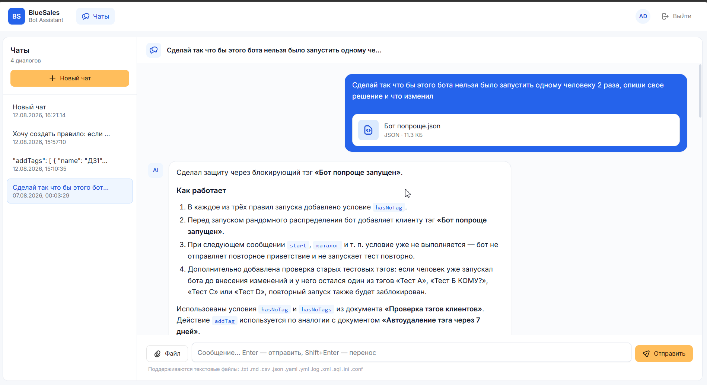

✦
Создание с нуля
Опишите, что должен делать бот: приветствие, распределение, теги, ограничения, сценарии повторного запуска — и получите готовую основу.
Опишите задачу своими словами. Ассистент опирается на примеры и правила BlueSales, помогает собрать логику, проверить условия и подготовить конфигурацию бота.

Не нужно помнить синтаксис и искать подходящий пример по документации: ассистент держит базу знаний в контексте разговора.
Опишите, что должен делать бот: приветствие, распределение, теги, ограничения, сценарии повторного запуска — и получите готовую основу.
Прикрепите JSON или вставьте фрагмент. Ассистент разберёт текущую логику, предложит изменение и объяснит, что именно поменял.
Документы базы знаний объединяются в системный контекст, поэтому ответы строятся не «по памяти», а с учётом загруженных правил и примеров.
Новые чаты получают актуальный снимок базы. Уже начатые диалоги продолжаются на том же контексте и не меняются задним числом.
Текст приходит потоково. Можно продолжать диалог, уточнять детали и шаг за шагом доводить сценарий до нужного результата.
Прикрепляйте JSON, YAML, XML, CSV и другие текстовые форматы, чтобы обсуждать реальные настройки без ручного копирования больших блоков.
Например: «сделай так, чтобы один клиент не мог запустить бота два раза».
Ассистент подберёт подходящие условия и действия из базы знаний и предложит конкретное изменение.
Задайте дополнительные условия, приложите текущий файл и доведите конфигурацию до рабочего варианта.
Авторизация, база данных, снимки знаний, потоковые ответы и серверная часть уже собраны в полноценный SPA-сервис.
Помогает создавать и изменять сценарии ботов, разбирать конфигурации, подбирать условия и действия из базы знаний, а также объяснять внесённые изменения.
На системных инструкциях и базе знаний, куда можно загрузить официальные примеры и внутренние материалы. Перед запросом документы собираются в единый контекст.
Да. Сервис принимает текстовые вложения, включая JSON, YAML, XML, CSV, TXT и другие разрешённые форматы.
Новые чаты получают новый снимок базы. Уже начатые диалоги продолжают работать с тем снимком, который был закреплён за ними при создании.
Откройте ассистента, создайте новый чат и напишите, что должно происходить с клиентом. Начать можно с одной фразы.